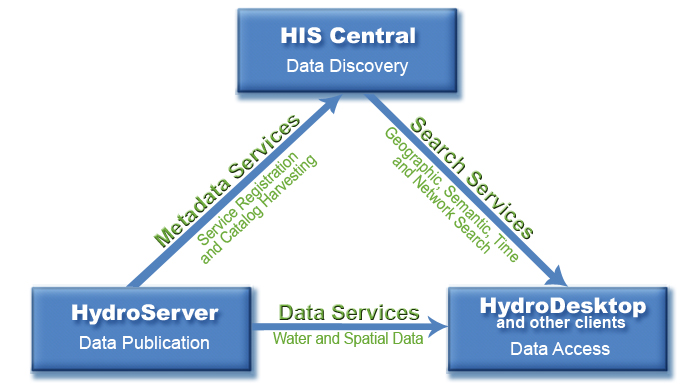

HydroServer Lite Web Services
What is a web service?
The Web service can be used by other websites and computer programs to access the scientific observation data from this
website in a standard format. These programs are: HydroDesktop, HydroExcel and HydroPad.
By providing the web service, this website is a part of the worldwide CUAHSI Hydrologic Information System
Resources
Go Back to main page